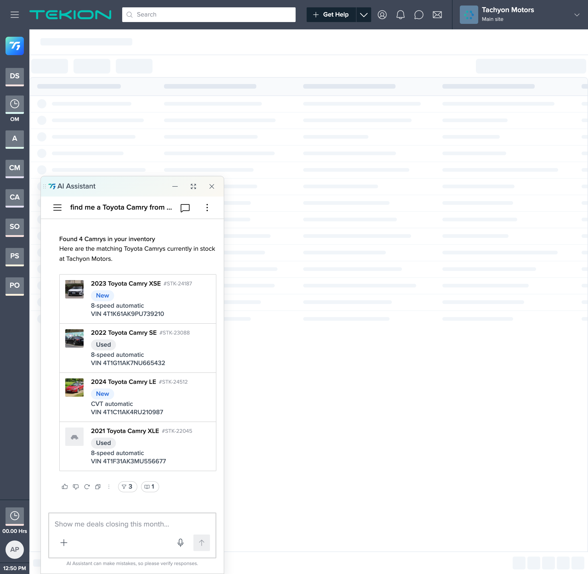
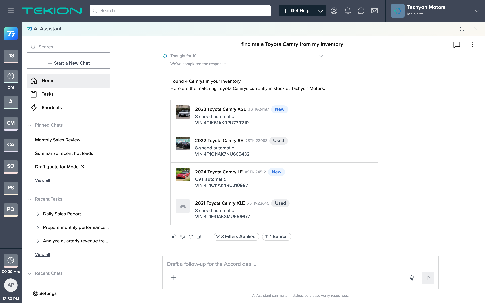
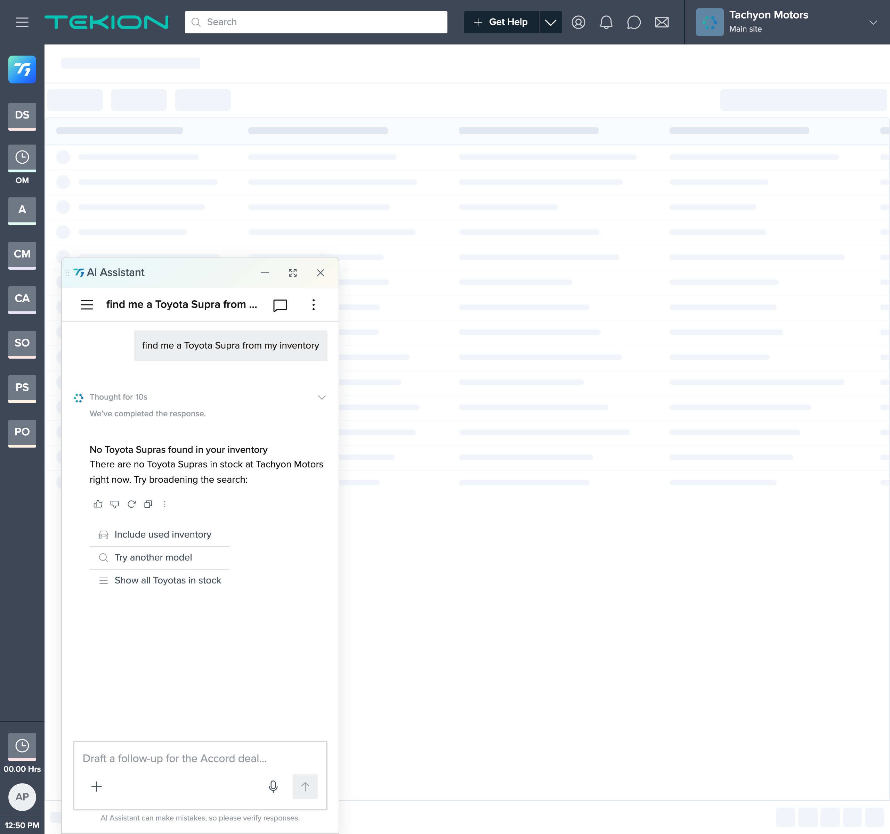
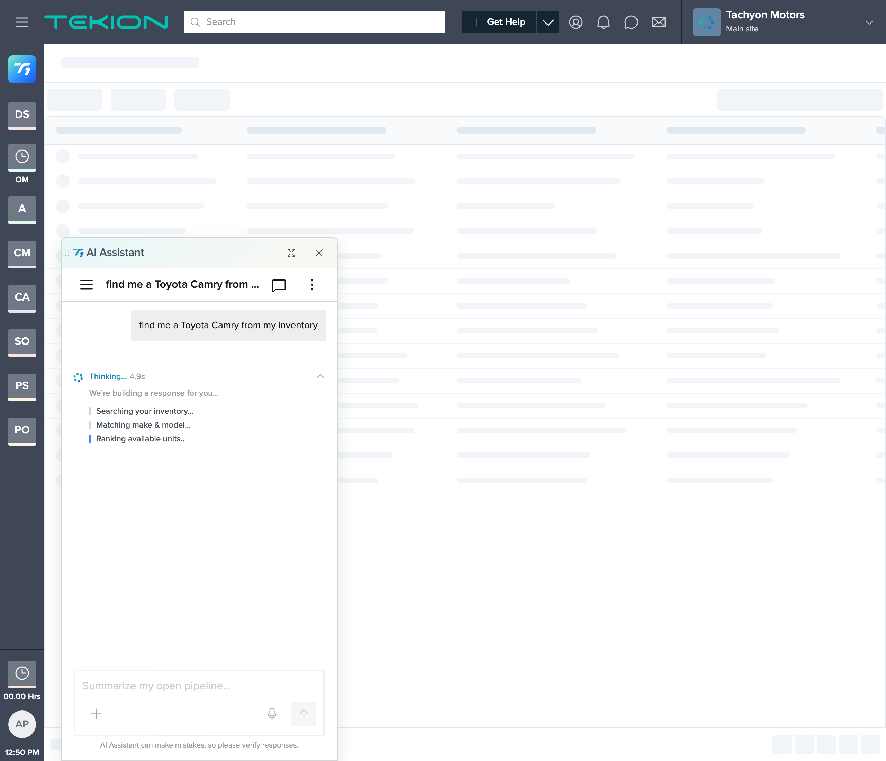
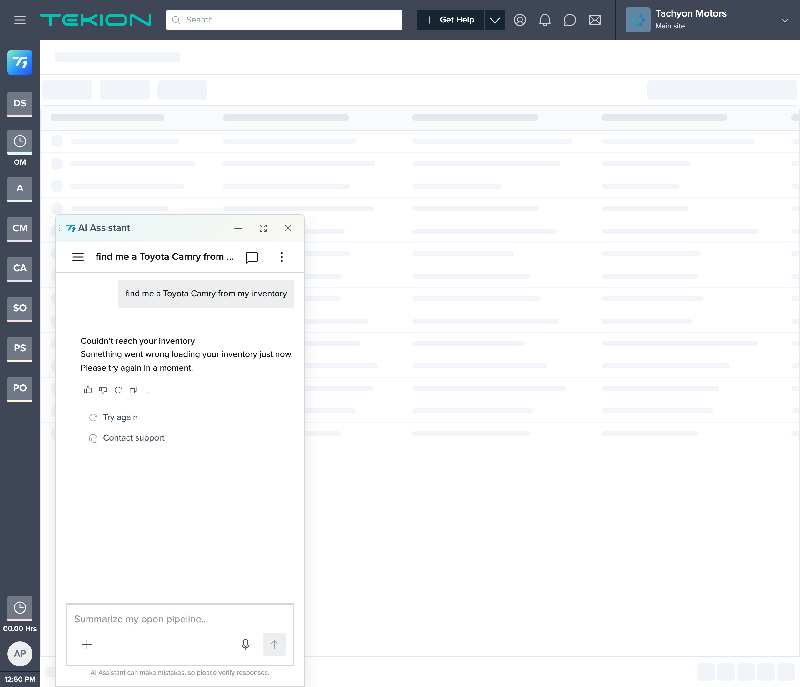

1. Summary
From a one-line ask, we produced a working T1 vehicle-search response in one session. It runs in a browser, consumes T1 as a read-only source of truth (its real component bundle and tokens), and covers the ask — a count summary plus a list of matching vehicles — along with the three unhappy states (empty, loading, error).
What it is
A functional, on-brand prototype — a fork of T1's canonical chat-interface.html (React via in-browser Babel), seeded to land on the inventory-search scenario — plus a full artifact chain (constitution → spec → plan → tasks → drift log) and per-step visual reviews.
What it is not
Production code; a real integration (results, VINs, stock numbers are mocked); or a general search — it's a single seeded flow, not the whole assistant. The natural-language query→inventory mapping was out of scope. The vehicle images are royalty-free stock photos of other cars (Audi, Maserati, Celica), not the labeled Camrys. It does not open by double-click — it needs a local server. It was not autonomous.
Cost was $31.23 over ~50 minutes of active session time. This is a much smaller scope than a full page build, so the low figure reflects less work — not a proven efficiency (see §7.4).
2. Visual evidence

ListingCard (photo · YMMM · VIN · Stock# · New/Used chip · transmission). Photos are stock placeholders and do not match the labeled trims.

SuggestionList to broaden the search; no card.
ReasoningLog, no results card yet, composer disabled.
3. What was built
| Area | Delivered |
|---|---|
| Shell | Fork of T1's canonical chat-interface.html; locked Tekion chrome (.ts-menubar/.ts-body) left untouched; docked-popover + full-screen surfaces |
| Result | AI Response with a sentence-case count summary + one ListingCard of 4 vehicle rows |
| Row fields | YMMM (title), VIN (description), Stock# (id), New/Used (Chip), transmission (subtitle), vehicle photo (see deviation) — display-only rows |
| States | Results (success), empty + broaden-search suggestions, loading/searching (ReasoningLog), error + retry |
| Photo thumbnail | Vehicle photo painted into the ListingCard avatar slot; neutral placeholder for the no-photo row (row 4) |
| Review affordances | ?scenario=match|empty|loading|error and ?panel=popover|left|right|fullscreen seed switches, so each state/surface is reviewable in isolation |
Each step was verified in a live browser — not only eyeballed — with DOM assertions for facts a screenshot can't prove (1 card / 4 rows, no pointer cursor on rows, no results card during loading, and a diff confirming the locked shell CSS was unchanged).
4. How it was done — the workflow
- Scaffold — a constitution pins the project to T1 and inherits its visual direction and hard rules (tokens only, Phosphor only, never rebuild the shell).
- Spec — the one-line ask became a full spec (problem, scope, flows, component map, four-state matrix, 11 numbered acceptance criteria). It scored completeness and asked 4 targeted questions where the ask was ambiguous (card layout, image handling, row interactivity, empty-state behavior).
- Plan + tasks — 6 checkpointed build steps, each re-reading the spec and stopping for review; every task traces to an acceptance criterion.
- Build — step by step, verified in-browser, checkpointed with the designer between steps.
5. Design-system fidelity & governance
- T1-grounded. Real T1 components (
ChatBubble,Response,ListingCard,Chip,SuggestionList,ReasoningLog) andvar(--t1-*)tokens; no hardcoded colors in the added styling; no third-party UI; Phosphor icons only. - Read-only enforced. Nothing under
design-systems/t1/was modified; nothing outsideprojects/t1-vehicle-search/was touched. The locked Tekion chrome was verified byte-identical to the template by diff. - 1 deviation flagged, not faked. T1's
ListingCardhas no image prop and intentionally hides its avatar in the narrow panel; showing a vehicle photo there required a fork-level CSS workaround plus an override of that hide. Both are recorded inconstitution.md §5and were explicitly signed off by the designer. On its own it's a byproduct of building against the real system, not a deliverable.
vehicle photo in ListingCardnarrow-panel avatar-hide overridecandidate: ListingCard image prop - Full drift log — every deviation and judgment call recorded in
tasks.md.
6. What went well
- The 4 clarifying questions up front settled ambiguity (card layout, image handling, interactivity, empty behavior) before any code.
- The output reads as genuine T1 because it composes T1's actual components and tokens, not approximations; the shell was provably untouched.
- In-browser + DOM-assertion verification caught a real issue (the avatar hidden in the narrow panel) a glance would have missed.
- The artifact chain + per-step screenshot reviews make every decision auditable by someone who wasn't in the session.
What was hard
- My cost estimate was wrong — I said $10–25; actual was $31.23 (~1.3–3× low). Underweighted cache-read volume.
- The brief's core requirement wasn't natively supported — “an image per vehicle” has no home in
ListingCard. I also misjudged in Step 2 that the avatar was rendering when a container query was hiding it — caught in Step 3, not first-try-correct. - The deliverable doesn't open by double-click — the designer hit
Failed to fetchafter handoff (file://blocks the T1 loader'sfetch()). A real sharing gap surfaced post-build. - The stock-photo fetch was unreliable — two pulls were unusable (a car undercarriage, a hood-open vintage car) and discarded; the usable three are the wrong makes for the labels.
- A copy inconsistency slipped through — the empty state paired a “Ferrari” query with “Camry” wording; caught and corrected.
- Verification tooling added overhead — the preview restarted the panel animation on resize; used a headless browser + seed switches for clean frames.
- It needed a human at every checkpoint — the override sign-off and photo swap were designer calls. Good for control; the workflow is assisted, not autonomous.
7. Cost breakdown (actual, from /cost)
7.1 Measured totals
| Total cost | $31.23 |
| Active time | 50m 8s (API compute 45m 29s) |
| Code produced | +1,010 / −88 lines |
| Model | Opus 4.8 · 100% (no Haiku) |
| Cache hit rate | 98% |
| Tokens (reported) | cache read 85.0M · cache write 1.5M · output 4.5k · input 657 |
7.2 Token composition (~86.5M total)
| Category | Tokens | Share | What it is |
|---|---|---|---|
| Cache read | 85.0M | ~98% | Re-reading the working context each turn — T1 source (CLAUDE.md, template, component specs), artifact chain, prior conversation, ~13 verification screenshots |
| Cache write | 1.5M | ~2% | First-time ingest of that context into the cache |
| Output | 4.5k | <0.01% | Newly generated tokens (as reported) |
| Input | 657 | <0.01% | Uncached prompt tokens |
Cost is dominated by context re-reads, not generation. The 98% cache-hit rate held it near $31; without caching it would have been several times higher.
/cost does not itemize dollars per token category, and the reported output count (4.5k) is lower than +1,010 lines of code would imply — so the per-category numbers are volumes as displayed, not a reconciled dollar split. The authoritative figure is the $31.23 total.7.3 Unit economics (derived from the $31.23 total)
| Unit | Cost |
|---|---|
| Per million tokens processed (blended) | ~$0.36 |
| Per active hour | ~$37 |
| Per build step (6 steps) | ~$5 |
| Per line of code produced | ~$0.03 |
7.4 Reading the cost honestly
- $31 for a single seeded flow is real money. It's favorable if the alternative is designer + engineer hours — but that comparison is an unmeasured estimate, not a benchmark, and this was one flow with an engaged reviewer, not a hands-off batch.
- Scope, not efficiency, explains the low figure. A larger companion POC (
gm-vsr, a full multi-section search page over 10 steps) cost $102.35. This one is cheaper because it did less — one seeded AI-panel turn with four states — not because it was more efficient per unit of work. The two are not directly comparable. - The cost is front-loaded in context (re-reading the design system + growing session). That implies per-screen cost should fall when the extraction is reused across projects — a projection, not something this POC proved.
- Levers, in priority order: reuse the design-system extraction across projects; prefer DOM assertions over screenshots for verification; run longer autonomous stretches between checkpoints.
8. Assessment & recommendation
For turning a one-line ask into a working, on-brand, verified prototype of a T1 response — with all four states and an auditable trail — this was effective: one flow in one session for ~$31, with no off-brand invention and the locked shell provably untouched. The caveats are equally real: it's a prototype not production; the data and photos are mocked (and the photos don't match their labels); the brief's image requirement needed a workaround and a signed-off deviation; the file doesn't open without a server; it needed continuous human review; and the per-screen economics at scale are a projection, not a result.
Suggested next steps (each with a cost/effort implication):
- Try it on 2–3 more T1 asks to test whether per-screen cost actually drops with design-system reuse — the key open question.
- Route the
ListingCardimage-prop gap to the T1 design-system owner (now logged in T1's “Known gaps”). - Swap in licensed dealer inventory photos in place of the stock placeholders.
- Produce a portable or hosted build so stakeholders can open it without running a server.
- If pursued further: wire live inventory data and the natural-language query→inventory routing — both out of scope here.